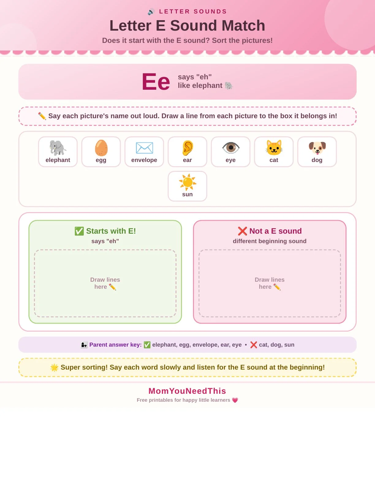

Letter E Sound Match Match The Letter E To Its Beginning Sound Pictures
Help your little learner connect the letter E with the sound it makes. This playful matching printable builds phonemic awareness — a key pre-reading skill.
Quick Answer
Draw the line only if it opens with “eh”: preschoolers connect the letter E to every picture whose name begins with short e, as in elephant and egg — the close-listening round of the set, with e's long-sound words as the great debate. Matching a written letter to a heard sound is the core move of phonics. Print at home with no signup needed.
At a Glance
- Ages: Preschoolers
- Activity: Matching letter E to the pictures that start with short E
- Skills: Beginning sounds and matching
- Format: Printable worksheet (PDF)
- Cost: Free, no signup
🐘 Elephant
🥚 Egg
👁️ Eye

🔊 Listen, Match & Draw A Line
Say the letter E and its sound together. Then look at each picture, say its name, and draw a line from the letter to the pictures that begin with the E sound. Pictures that begin with other sounds get no line — leaving them out is half the game.
⬇️ Download Free Printable 🖨️ Print🎁 Free printable for toddlers & preschoolers
🗣️ Stretch The First Sound
Work in passes — this page needs them most. First pass: say each picture's name slowly and stretch its opening — e-e-egg is the model. Second pass: draw lines only to the pictures that opened with “eh”. Two passes keep the listening and the pencil work separate, which makes both better.
🎉 Celebrate Every Match
Save the biggest cheer for a well-argued call: on this page, even a disputed line can be a win if your child can say the word and explain the sound they heard. The explanation is the skill; the line is just its receipt.
🎨 Keep Exploring Free Letter Activities
More alphabet learning activities are added regularly for toddlers and preschoolers.
🎁 View All Free Resources🔊 Matching The E Sound
A line on this page is a claim: “this word starts like egg.” Your child tests each picture against the quiet “eh” — the softest sound in this set — and only the true short-e words get connected to the letter E. It takes leaning in and listening closely, which is precisely the skill being built.
The reference trick matters most on this page: egg is a word most children can say and hear clearly. “Does it start like egg?” converts every new picture into a comparison a preschooler can actually perform — essential help when the target sound is this quiet.
E's impostor is itself: eagle, emu and eye start with the letter e but say its long name-sound instead. Whether those pictures earn a line is the richest argument in the set — let your child make the call and defend it out loud.
🖨️ How to Use This Printable
Get started in minutes — everything here is free and made for busy parents.
- Download the printable. Tap the download button to save the free Free Letter E Sound Match file to your device.
- Print it out. Use any home printer and regular paper — cardstock works great for pages little hands will use again and again. The print button opens the full-size page in a new tab if you prefer to print from there.
- Learn together. Sit with your child and say every picture's name out loud before any lines are drawn. Stretch the /e/ together and let your child make the call. Short sessions work best.
- Explore more. Check the free printables linked below for your next activity.
❓ Free Letter E Sound Match FAQs
Is this Free Letter E Sound Match printable free?
Yes — every printable on MomYouNeedThis is 100% free to download and print. No signup, no payment, just tap the download button and print the E match as often as your child wants another round.
How do I use this letter e printable?
Print the page and match together: say the letter E's sound, name each picture slowly, and draw a line only to the pictures that begin with /e/. Short, playful sessions work better than long lessons for little learners.
What literacy skills does this practice?
Letter-sound correspondence — the written E stands for short /e/ on this page — plus beginning sounds and listening discrimination. The sharpest judgements involve e's long sound in words like eagle and eye: same letter, different sound. Arguing those calls out loud is where the deepest learning on this page happens.
🔗 More Free Printables You’ll Love
Pair this printable with more free learning activities from the MomYouNeedThis library.
- 🔊 Free Letter F Sound MatchFree printable letter f sound match for little learners.
- 🖼️ Free Letter E Picture SortFree printable letter e picture sort for little learners.
- 🔊 Free Uppercase Letter E Sound PracticeFree printable uppercase letter e sound practice for little learners.
- 🎨 Free Letter E Sound ColoringFree printable letter e sound coloring for little learners.